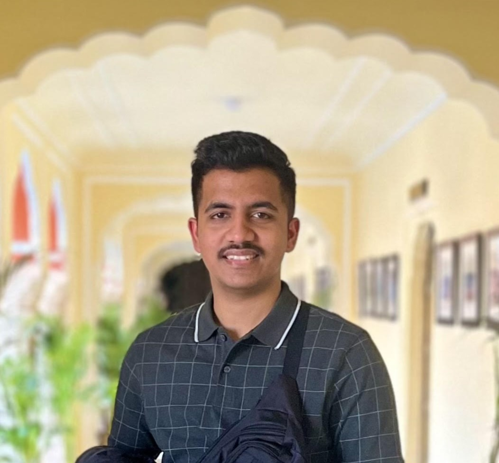

Jiten Mistri

Summary
Senior Software Engineer with over 1.5 years of experience in Software Development.
Proven expertise in designing, developing, and maintaining scalable and high-performance
software/products. Skilled in JAVA programming language, technologies, and methodologies,
with a strong focus on code quality, performance optimization, and best practices. Supportive
and enthusiastic team player dedicated to streamlining processes and efficiently resolving
project issues.
Skill Highlights
- Agile/Scrum methodology
- Performance and scalability
- Optimization
- API Designing
- Spring Boot
- Hibernate
Experience
Senior Software Engineer - 12/2023 to Present
Comviva, Gurugram
- Investigation, design, and implement scalable applications for data identification, analysis, retrieval, and indexing
- Software design and development while remaining concentrate on client needs.
- Cooperate diligently with other IT team members to plan, design, and develop smart solutions.
- Estimate interface between hardware and software.
- Interface with business analysts, developers, and technical support to determine optimal specifications.
Product Development Engineer - 08/2022 to 11/2023
Comviva, Gurugram
- Consulted regularly with customers on project status, proposals, and technical issues.
- Transformed existing software to correct errors, upgrade interfaces, and improve efficiency
- Cooperate diligently with other IT team members to plan, design, and develop smart solutions.
Education
Bachelors of Technology: Electronics and Communication Engineering - 2022
NIST University, Berhampur Odisha